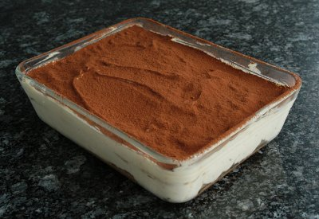

| Zutaten für 4 Personen: | |
| 2 | Eier |
| 50 g | Zucker |
| 200 g | Mascarpone |
| 1/2 | Zitrone, nur die abgeriebene Schale |
| 1/2 | Orange, nur die abgeriebene Schale |
| 150 g | Löffelbiskuits |
| 1.5 dl | Kaffee, stark, gesüsst |
| 2 EL | Cafélikör oder Cognac |
| Schokoladenpulver, zum Darüber streuen | |
Zitronenschale und Orangenschale abraffeln.
Eier trennen; Eiweiss in ein Gefäss um sie nachher steif zu schlagen, Eigelb in eine Schüssel um darin die Creme zuzubereiten.
Eigelb und Zucker hell rühren,
Mascarpone, Zitronen- und Orangenschale beifügen und so lange weiter rühren, bis alles gut vermischt ist.
Dann sorgfältig den Eischnee darunter ziehen.
Den Boden einer Gratinform, ca. 12 x 24 cm gross, mit den Löffelbiskuits belegen, mit der Hälfte des parfümierten Kaffees beträufeln, die Hälfte der Mascarpone-Crème darauf verteilen.
Die restlichen Biskuits auf die Crème legen, wiederum mit Kaffee beträufeln und mit der übrigen Masse zudecken, glatt streichen.
Mindestens 1 Stunde kühl stellen, vor dem Servieren mit Schokoladenpulver bestreuen. Je nach Festigkeit des Desserts schöpft man es mit dem Löffel oder schneidet es mit dem Messer und hebt die Stücke mit der Tortenschaufel.
Herbert Eigenmann, Code: TRS
Hat vorzüglich geschmeckt! RE 13.5.2010
Am 11.7.2011 war ich etwas zu sparsam mit dem Kaffeelikör in der Angst, die Löffelbiskuits würden sich in Matsch auflösen. Im Gegenteil, sie waren noch etwas zu trocken. RE
@LINKBACK_TAG@ @WAKELOCK@